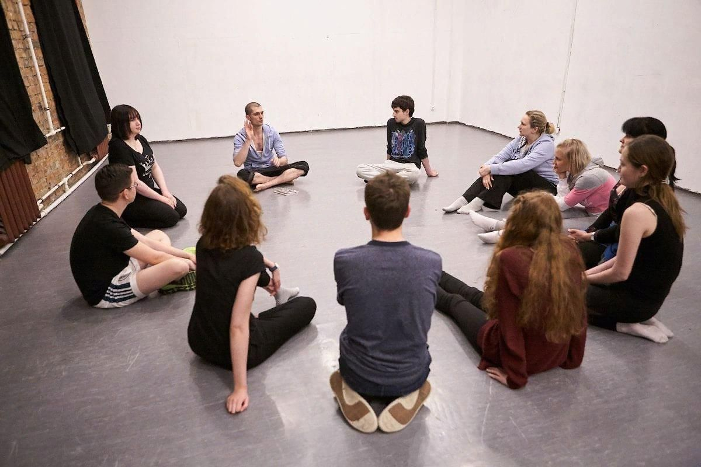
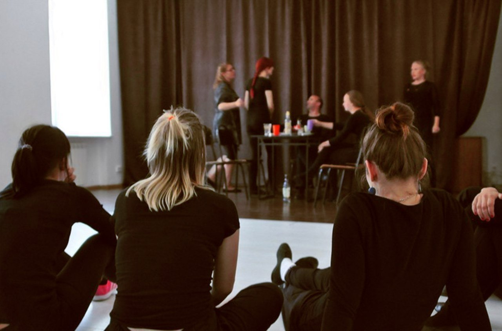
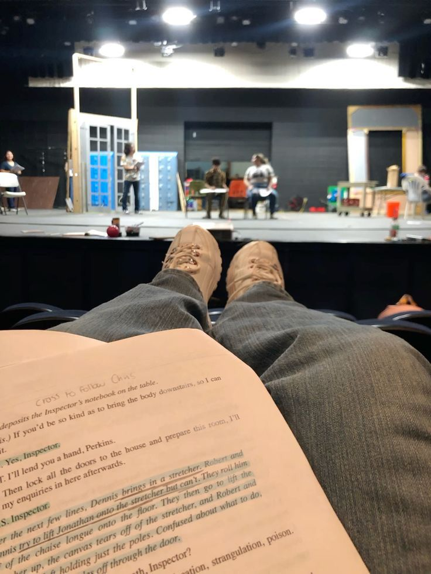
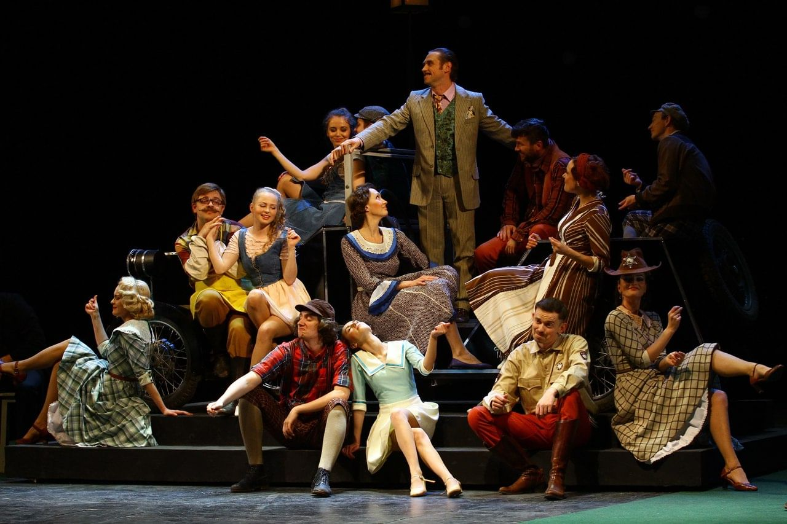

Услуги студии
Поиск
-
Мастер-классы по актёрскому мастерству
Для детей от 8 лет и взрослых

Подробнее о мастер-классе
Мастер-классы по актёрскому мастерству — это возможность погрузиться в мир театра, раскрыть потенциал и научиться выражать эмоции через игру. Занятия проводят профессиональные актёры и режиссёры с опытом работы в ведущих театрах Москвы.
- Для детей от 8 лет, подростков, взрослых
- Длительность: 2 часа
- Формат: групповой (до 12 чел.) или индивидуальный
- Что включено:
- Разминка и техника речи
- Игровые упражнения
- Работа с текстом и монологами
Стоимость: 10 000 руб.
-
Актёрская подготовка к кастингам и просмотрам
Работа с репертуаром, монологами, импровизация

Подробнее об актёрской подготовке
Независимо от того, идёте ли вы на кастинг в кино, сериал, рекламу или театральный проект — первое впечатление решает всё. Наша подготовка помогает проявить себя как актёра — ярко, честно и профессионально.
- Подбор и адаптация монолога под ваш типаж, возраст и проект
- Работа над речью: дикция, темп, интонация, работа с паузами
- Физическое присутствие: пластика, жест, взгляд, работа с пространством
- Импровизация и реакция на режиссёрские замечания
- Форматы:
- Разовое занятие (2 ч) — для срочной подготовки
- Курс из 4–6 занятий — глубокая работа под проект
- Онлайн или очно — по выбору
-
Театральная терапия
Для групп и индивидуальных занятий — снятие стресса через игру

Подробнее о терапии
Театральная терапия — это способ освободить эмоции, лучше понять себя и наладить контакт с другими. Мы используем методы режиссёрской и актёрской работы в безопасной, поддерживающей среде.
- Творческое самовыражение через образ, движение, голос
- Снятие внутреннего напряжения через игровую импровизацию
- Уверенность в общении и публичных выступлениях
- Для кого это:
- Люди, испытывающие тревожность, стресс, эмоциональное выгорание
- Подростки — для развития уверенности и навыков общения
- Все, кто хочет выразить то, что сложно сказать словами
-
Постановка спектаклей
Полный цикл: от сценария до премьеры

Подробнее о постановке спектаклей
Независимо от того, нужен ли вам школьный спектакль, благотворительная постановка, корпоративное шоу или любительская премьера — мы возьмём на себя полный цикл создания спектакля.
- Концепция и сценарий: адаптация классики или написание оригинальной пьесы под ваш запрос
- Кастинг и репетиции: подбор актёров или работа с вашей группой
- Режиссура и постановка: работа над характерами, мизансценами и драматургией действия
- Сценическое оформление: рекомендации по костюмам, реквизиту, свету и декорациям